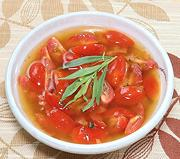

|
Lemon, Butter & Tomato SauceCalifornia | ||||
| Makes: Effort: Sched: DoAhead: |
1-1/2 cups ** 30 min 2 days |
A very nice sauce to spoon over fish fillets - interesting flavors and textures, but won't overpower. The amount given will serve for about 4 fillets of Tilapia size. | |||
|
8 1/2 1 1/2 3 ar |
oz T oz c T |
Grape Tomatoes Tarragon Shallot Butter Lemon Juice Wine, White (1) |
Make: - (30 min)
|